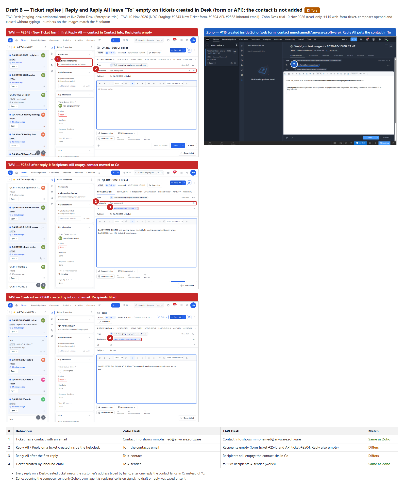
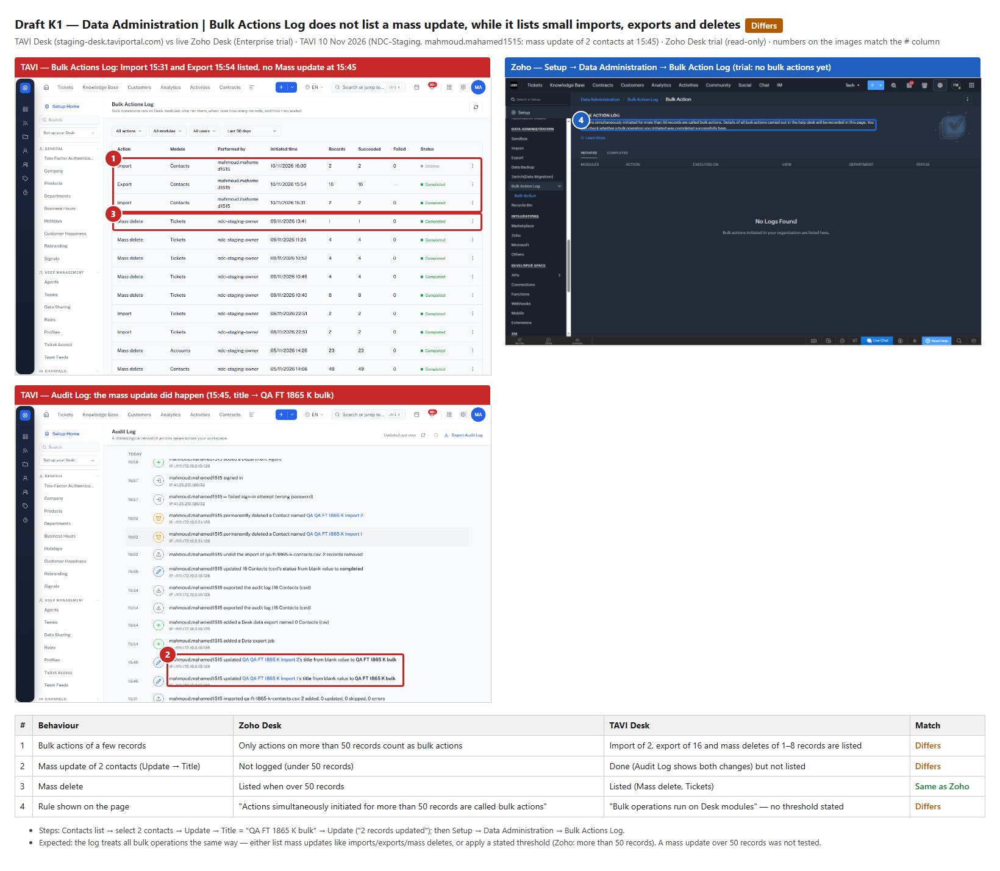
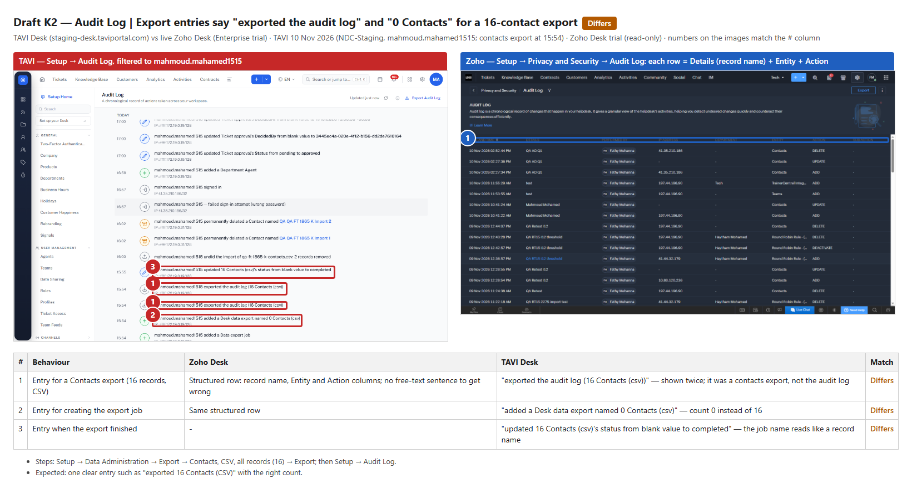
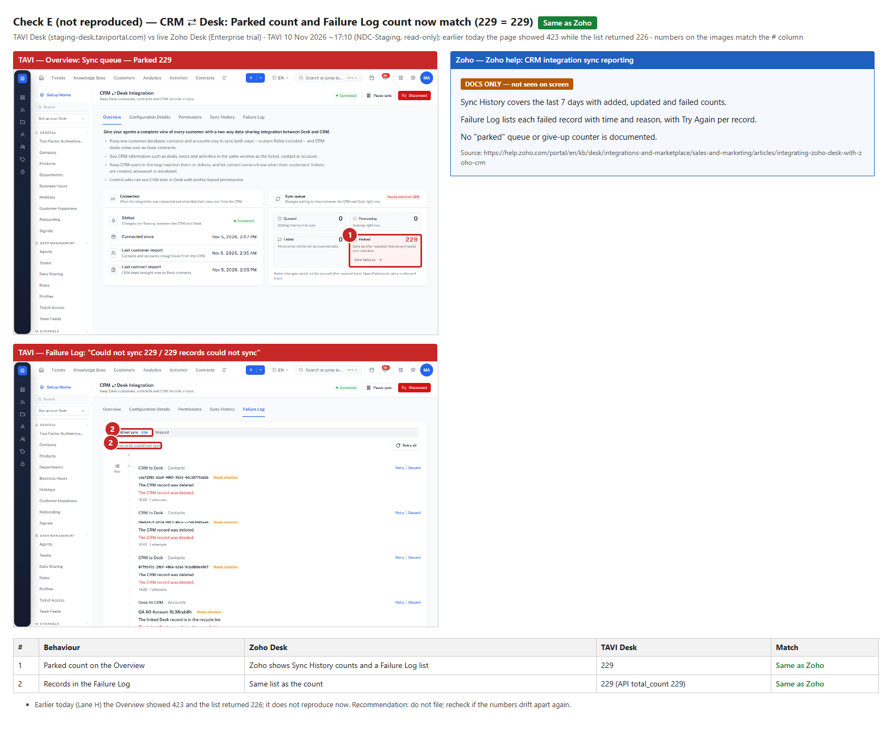

NDC-1865 follow-up: bug drafts for review
Summary
| # | Draft | Priority | Recommendation |
|---|---|---|---|
| B | Ticket replies | Reply and Reply All leave "To" empty on tickets created in Desk (form or API); the contact is not added | Medium | File |
| K1 | Data Administration | Bulk Actions Log does not list a mass update, while it lists small imports, exports and deletes | Low | File |
| K2 | Audit Log | Contacts export is logged as "exported the audit log" and "export named 0 Contacts" | Low | File |
| E | CRM ⇄ Desk | Parked count vs Failure Log count — NOT REPRODUCED (229 = 229 now) | — | Do not file (not reproduced) |
Common fields for filed drafts: Bug state, assignees MahmoudMohamed, Hegazy, mfathy, eahmed, module Desk, Sprint 15, start 2026-11-10, annotated image attached.
Drafts
B. Ticket replies | Reply and Reply All leave "To" empty on tickets created in Desk (form or API); the contact is not added
Steps
- Create a ticket in Tech for a contact that has an email, with the New Ticket form (or the API).
- Open the ticket and click Reply All (or Reply from the menu).
- Type the address by hand, send one reply, reload, and click Reply All again.
Expected: As in Zoho Desk: Reply and Reply All put the ticket's contact in To (Zoho ticket #115, created inside Zoho, contact mmohamed@anyware.software: To = mmohamed@anyware.software).
Actual
- #2543 (New Ticket form) and #2504 (API): Recipients is empty although Contact Info shows mmohamed@anyware.software.
- Plain Reply is empty too.
- After the first reply, Reply All still has Recipients empty and the contact is moved into Cc.
- A ticket created by inbound email (#2568, from mahmoud.mmohamedsamy@gmail.com) works: Reply and Reply All fill Recipients with the sender.
Notes
- Every reply on a ticket created inside Desk needs the customer's address typed by hand.
- Test tickets #2543 and #2504 were deleted after the check; #2568 is the user's own email ticket and was left as is.

K1. Data Administration | Bulk Actions Log does not list a mass update, while it lists small imports, exports and deletes
Steps
- Contacts list → select 2 contacts → Update → Title = "QA FT 1865 K bulk" → Update ("2 records updated").
- Open Setup → Data Administration → Bulk Actions Log.
Expected: The log treats bulk operations consistently. Zoho Desk logs bulk actions on more than 50 records ("Actions simultaneously initiated for more than 50 records are called bulk actions"); TAVI states no threshold and already lists an import of 2, an export of 16 and mass deletes of 1–8 records, so a mass update should be listed too (or a stated threshold applied to all).
Actual
- The import (15:31) and export (15:54) are listed; the mass update at 15:45 is not.
- The Audit Log shows the mass update happened (both title changes at 15:45).
Notes
- A mass update on more than 50 records was not tested, so it is not known whether larger mass updates are logged.
- Zoho's trial log is empty, so its threshold comes from the page text.

K2. Audit Log | Contacts export is logged as "exported the audit log" and "export named 0 Contacts"
Steps
- Setup → Data Administration → Export → Contacts, CSV, all records (16) → Export.
- Open Setup → Audit Log (filter user = the exporter).
Expected: One clear entry for the export with the right object and count, e.g. "exported 16 Contacts (CSV)". Zoho's Audit Log shows each change as a structured row (record name, Entity, Action).
Actual
- "mahmoud.mahamed1515 exported the audit log (16 Contacts (csv))" — shown twice; it was a contacts export, not the audit log.
- "mahmoud.mahamed1515 added a Desk data export named 0 Contacts (csv)" — count 0 instead of 16.
- "updated 16 Contacts (csv)'s status from blank value to completed" — the export job name reads like a record.
Notes
- Other Audit Log rows show raw ids where names are expected (e.g. "DecidedBy from blank value to 3445ec4a-…", and on other testers' tickets "User a7a7a7a7 updated … owner … to 876ce871-…"). Could be added here or kept separate.

E. CRM ⇄ Desk | Parked count vs Failure Log count — NOT REPRODUCED (229 = 229 now)
Steps
- Setup → Integrations → CRM ⇄ Desk Integration → Overview (Sync queue).
- Open Failure Log.
Expected: The Parked number equals the number of records in the Failure Log.
Actual
- Now: Overview Parked 229, Failure Log "Could not sync 229 / 229 records could not sync", API total_count 229.
- Earlier today (Lane H) the Overview showed 423 while the list returned 226. That does not reproduce now.
Notes
- Recommendation: do not file; recheck if the numbers drift apart again.
- Failure Log items for deleted records show only a raw record id (e.g. cda72981-…) instead of a name. Several of today's 229 come from our own cleanup (Lane K and Lane E contacts); they were left untouched (Discard is a write).

What this pass did
- TAVI (mahmoud.mahamed1515, one sign-in): read-only — Audit Log, Bulk Actions Log, CRM ⇄ Desk Overview + Failure Log; opened inbound-email ticket #2568 and its Reply / Reply All composers, closed without typing (no draft saved). Nothing created, edited, sent or deleted.
- Zoho Desk trial (read-only): CRM integration settings, Bulk Action Log, Audit Log, ticket #115 Reply All composer opened and closed without typing. Zoho sent only its own background calls ("recent items", the "agent is replying" collision signal); no draft, reply or record change.
- Zoho CRM integration Sync History / Failure Log tabs could not be opened by the script ("Unable to process your request"); E's Zoho side uses the help article.